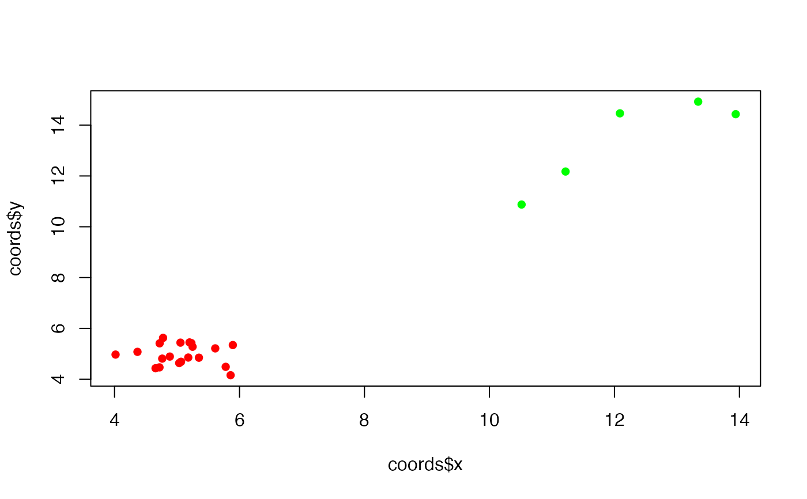

Removes spatial outlier cells based on local k-nearest neighbor distances
Source:R/GetBoundary.R
RemoveOutliers.RdIdentifies and removes spatial outliers based on local density. For each cell, the average distance to its k nearest neighbors is computed. Cells with a mean k-NN distance greater than a specified cutoff are considered outliers and removed. This helps retain densely connected cells while filtering isolated ones.
Value
A data frame containing the filtered coordinates with an additional column:
mean_knn_dist: The average distance to theknearest neighbors for each point.
Only points with a mean_knn_dist less than the specified
distance_cutoff are retained.
Examples
# Set seed for reproducibility
set.seed(123)
# Generate 20 clustered points
n1 <- 20
x1 <- rnorm(n1, mean = 5, sd = 0.5)
y1 <- rnorm(n1, mean = 5, sd = 0.5)
# Generate 5 outliers
n2 <- 5
x2 <- runif(n2, min = 10, max = 15)
y2 <- runif(n2, min = 10, max = 15)
# Combine clustered points and outliers
coords <- data.frame(x = c(x1, x2), y = c(y1, y2))
dim(coords)
#> [1] 25 2
# Plot clustered points and outlier points
plot(coords$x, coords$y,
pch = 16,
col = rep(c("red", "green"), times = c(20, 5))
)

# Remove outlier points with a specified knn distance cutoff
new_coords <- RemoveOutliers(coords, k = 5, distance_cutoff = 2)
dim(new_coords)
#> [1] 20 3
# Returns TRUE meaning outliers have been removed in new_coords
all((new_coords$x == x1) & (new_coords$y == y1))
#> [1] TRUE